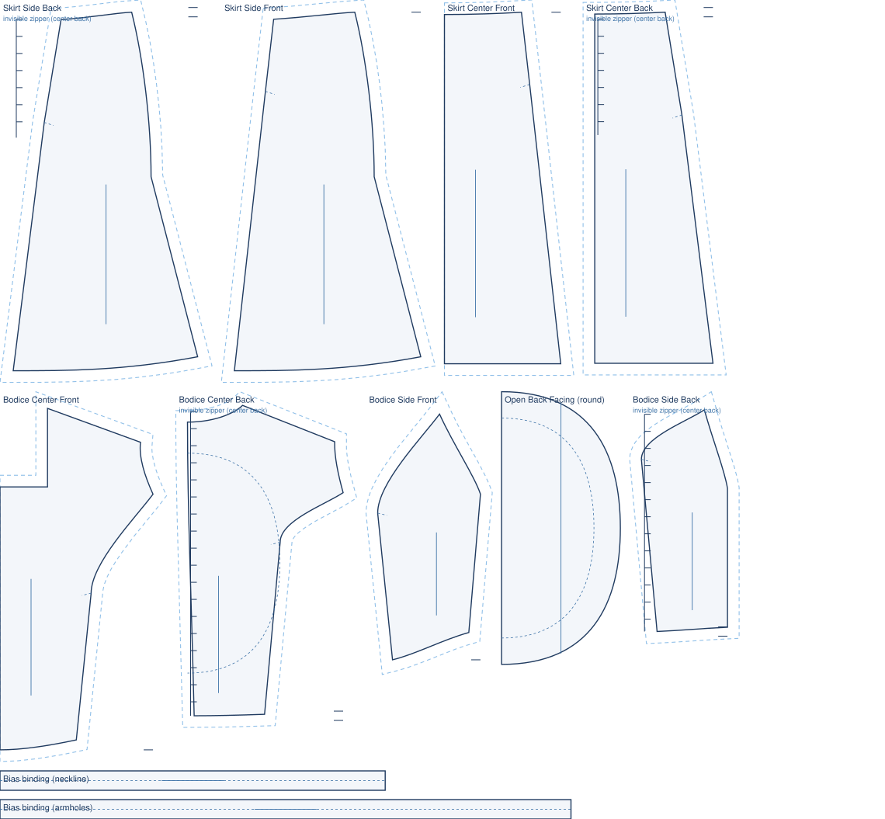
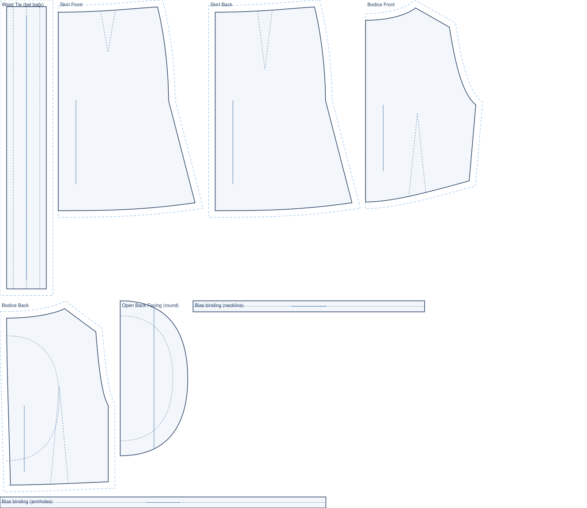

stitchu / blog
The Pattern Journal.
This is where the engine's work is collected as something you can read. Every pattern below was drafted end to end from a single photo, and every drawing is the engine's own output, nothing traced or mocked.
37 of 54 real product photos turn into a full pattern, and counting.
Follow The Number In The Patch Notes
The Sixties Seventies Collection.
The vintage silhouettes, twelve looks from 1960s and 1970s dresses and skirts, each read from a museum photograph and drafted to a full pattern piece by piece.
Quant, Biba, Courrèges, Pucci And More.
Twelve period looks, every pattern piece validator clean, with the surface detail the engine does not yet draw noted honestly on each one.
Open The Sixties Seventies CollectionPatterns From The Benchmark.
Every one of these is a real product style the engine read from a photo and drafted into a complete, sewable pattern. These twelve are the ones that draft cleanly today. Each card links to its full pattern page.
The misses are public too. The photos that do not yet draft to a full pattern are tracked openly in the benchmark and the patch notes.



